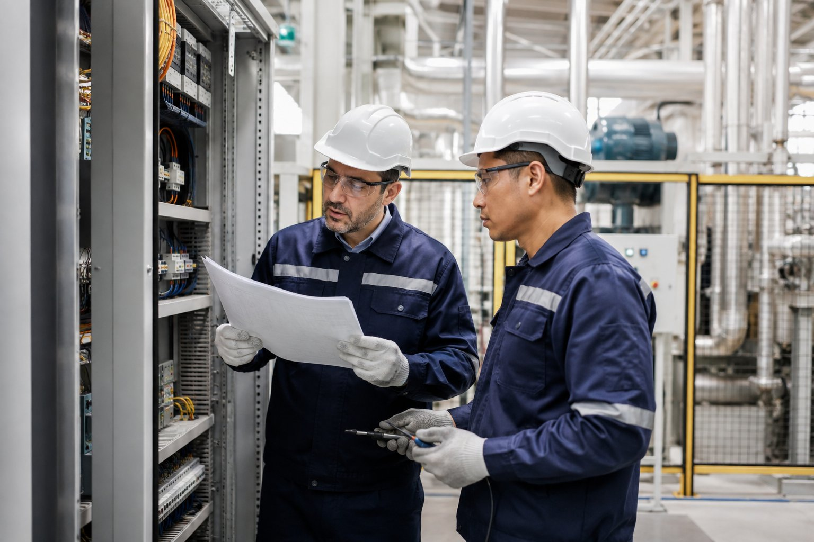

Una empresa comprometida con la ingeniería y la continuidad operativa
Curymarka SAC es una empresa peruana dedicada al desarrollo de soluciones de ingeniería electromecánica para los sectores salud, industrial e institucional. Desde 2017 trabajamos con un enfoque basado en la calidad, la seguridad y la mejora continua, contribuyendo a la operación confiable de infraestructura crítica mediante un servicio técnico profesional y un firme compromiso con nuestros clientes.
Casi una década construyendo confianza
Desde nuestra fundación en 2017, Curymarka SAC ha crecido de la mano de la industria peruana, ampliando nuestra especialización técnica y consolidando experiencia real en proyectos para el sector salud e industrial.
Curymarka SAC inicia sus operaciones en el Perú, enfocando su actividad en soluciones de ingeniería electromecánica y mantenimiento industrial.
La empresa fortalece su participación en proyectos relacionados con sistemas de aire comprimido y plantas de oxígeno medicinal, respondiendo a las necesidades del sector salud.
Moderniza sus procesos administrativos incorporando la emisión electrónica de comprobantes y continúa ampliando su presencia en proyectos para instituciones públicas.
Consolida su experiencia participando en diversos procesos de mantenimiento de plantas de oxígeno medicinal para hospitales e instituciones del Estado, reafirmando su compromiso con la continuidad operativa y la calidad del servicio.
Nuestra experiencia, reflejada en cifras
Desde 2017, Curymarka SAC ha desarrollado soluciones de ingeniería electromecánica para instituciones públicas y privadas, consolidando una trayectoria basada en la calidad, la seguridad y la confianza.
Año de inicio de operaciones.
Años contribuyendo al sector industrial y salud.
Proveedor inscrito para contrataciones con el Estado.
Proyectos desarrollados para instituciones públicas a nivel nacional.
Calidad, seguridad y mejora continua en cada proyecto
En Curymarka SAC entendemos que la confiabilidad de nuestros servicios impacta directamente en la continuidad operativa de nuestros clientes. Por eso, cada proyecto se desarrolla bajo estrictos estándares de calidad y seguridad, con un compromiso permanente de mejora continua en nuestros procesos técnicos y administrativos.
- Compromiso con la calidad y la mejora continua en cada proyecto.
- Enfoque en la seguridad y el cumplimiento de estándares técnicos.
- Atención responsable para los sectores salud, industrial e institucional.
- Soluciones orientadas a garantizar la continuidad operativa de nuestros clientes.
